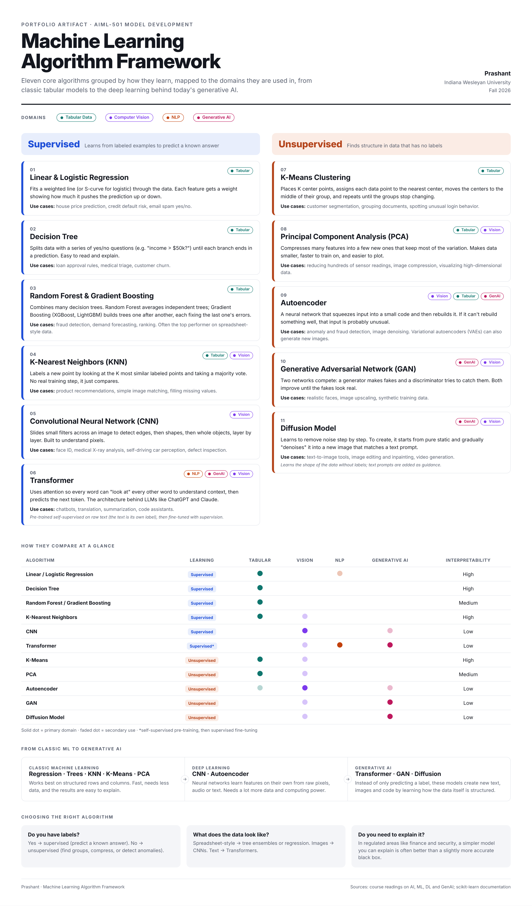

Software Development Engineer in cybersecurity and graduate student in Artificial Intelligence and Machine Learning at Indiana Wesleyan University.
I'm a Software Development Engineer at Morgan Stanley, where I work on the authentication and authorization systems that protect how people sign in and what they can access. Day to day that means Java, Spring Boot and Spring Security, PingOne Advanced Identity Cloud, and the CI/CD pipelines that keep configuration secure and repeatable.
My path into this space started in identity and access management and API development, and along the way I co-built a startup with a friend, which taught me how to move fast, learn new technologies quickly and own a product end to end.
Over the last year I've been driving AI adoption on my team, bringing in tools like Claude and GitHub Copilot and connecting them to Jira, GitHub and Sourcegraph through MCP servers to help automate vulnerability remediation. That work is what led me to pursue graduate study in AI and machine learning. My goal is to become an engineer who can design AI systems that are not only useful, but secure, explainable and trustworthy.
Years of building authentication and authorization systems in a highly regulated environment.
Real experience rolling out AI tools and automation on an engineering team, not just in theory.
Able to explain technical ideas, and their risks, in plain language to engineers and non-engineers.
Work created during my graduate program. Each artifact includes the deliverable along with its objective, process, tools and value.

A visual guide to eleven core ML algorithms, how they learn, and where they are used, from tabular data to generative AI.